من چند وقت پیش با today.bnomial.com آشنا شدم که هر روز یک سوال یادگیری ماشین مطرح میکنه و بعد از اینکه پاسخ خودتون رو ثبت کنید پاسخ صحیح رو به همراه کمی توضیحات نشون میده. من خیلی از این سایت و سوالاتش خوشم اومد. برای اینکه به تاریخچه سوالات دسترسی داشته باشید با پول بدید و کتابش رو بخرید. من کتابش رو خریدم و قصد دارم هر چند روز یکبار یکی از این سوالات رو در قالب یک بلاگ پست مطرح کنم تا هم دانسته های خودم رو تثبیت کنم هم برای بقیه مفید باشه. قرار نیست کتاب رو ترجمه کنم. صرفا صورت سوال رو مینویسم بعد خودم شروع میکنم به توضیح دادن. توی کتاب ممکنه یک صفحه جواب رو توضیح داده باشه ولی من میشینم چند صفحه براتون میبافم 🙂
یه نمایش تلویزیونی معروف، این ایده رو که یه اپلیکیشن داشته باشیم که یه تصویر رو بگیره و بگه هاتداگه یا نه v, مسخره کرده بود! اگر سریال سیلیکونولی رو دیده باشید میدونید در مورد کدوم قسمت داره صحبت میکنه 🙂 میدونم ایده احمقانهای محسوب میشه ولی فرض کنید میخوایم این اپلیکیشن رو بسازیم. ما میخوایم از یادگیری عمیق (deep learning) برای ساخت یک binary classifier استفاده کنیم. فقط سوالی که اینجا مطرح میشه ساختار لایه آخر شبکه باید چه جوری باشه؟ کدوم یکی از توابع فعالسازی (activation functions) میتونه برای لایه خروجی انتخاب بشه؟
پاسخ کوتاه : گزینه ۳ و ۴
پاسخ بلند : ما اینجا با یک مسئله Classification یا طبقهبندی روبهرو هستیم. یکسری تصویر داریم که از قبل برچسب خوردند. یعنی تعدادی تصویر هاتداگ داریم و میخوایم مدل یاد بگیره هاتداگه چه ویژگی هایی داره و زمانی که یه تصویر جدید بهش میدیم بگه هاتداگه یا نیست؟! چون اینجا فقط دو تا دسته داریم (هاتداگ بودن یا نبودن) پس میشه طبقهبندی دودویی یا Binary Classification
اگر میخواید بیشتر در مورد Binary Classification بدونید میتونید لینک زیر رو مطالعه کنید :
هدف این سوال اینه که شما کاربرد توابع فعالسازی رو یادآوری کنید و بدونید چه زمانی باید از کدوم تابع فعالسازی استفاده کنید. اول بیاید نحوه کار این ۴ تا تابع فعالسازی رو بررسی کنیم.
تابع ReLU : همونطور که در تصویر زیر هم مشاهده میکنید، اگر ورودی این تابع مقداری کمتر از ۰ (صفر) باشه خروجی تابع ۰ (صفر) میشه و در غیر این صورت همون مقداری که به عنوان ورودی گرفته رو به خروجی انتقال میده.
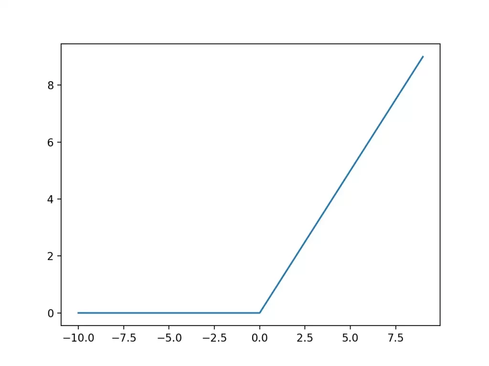
تابع Leaky ReLU : مشابه ReLU عمل میکنه با این تفاوت که برای مقادیر ورودی منفی، خروجی ۰ (صفر) نمیشه و میتونیم برای مواردی که مقادیر منفی هم داریم ازش استفاده کنیم. مثلا فرض کنید مقدار ما ۱- باشه. این تابع میاد بین ۱- و ۰.۱- اون مقداری که بزرگتره رو انتخاب میکنه که اینجا ۰.۱- میشه. پس مقادیر کمتر از ۰ رو کاملا حذف نمیکنه، فقط وزن کمی بهشون میده.
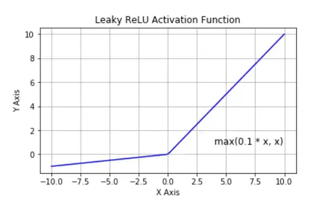
تابع Sigmoid : این تابع مقادیر ورودی رو به بازه ۰ تا ۱ نگاشت میکنه.
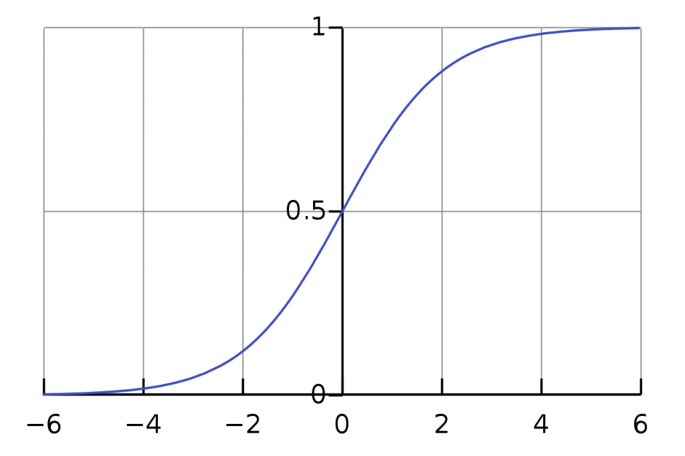
تابع Softmax : مشابه Sigmoid عمل میکنه و مقادیر ورودی رو به نحوی به بازه ۰ تا ۱ نگاشت میکنه که مجموع اون برابر با ۱ بشه. اما توی Sigmoid لزوما مجموع مقادیر برابر با ۱ نمیشد.
حالا ما چی میخوایم؟ ما یه شبکه عصبی چند لایه داریم که یه تصویر رو به عنوان ورودی بهش میدیم و در خروجی به ما میگه اون تصویر هات داگه یا نه! اینکه تو لایه های میانی از چه تابع فعالسازی استفاده شده الان برای ما مهم نیست. تو لایه های میانی عموما از ReLU استفاده میشه ولی ما اینجا با لایه آخر کار داریم. لایه آخر دو تا نورون داره. چرا؟ چون دو تا دسته داریم. حالا اگر برای لایه آخر از تابع ReLU یا Leaky ReLU استفاده کنیم چه اتفاقی میافته؟ همونطور که میدونید تابع ReLU مقادیر کوچکتر از صفر رو همون صفر در نظر میگیره و Leaky ReLU هم یه مقدار خیلی کوچیک در نظر میگیره. عملا فقط مقادیر بزرگتر از ۰ رو از خودش عبور میده. خب این برای Classification به درد ما نمیخوره. فرض کنید در لایه آخر از ReLU استفاده کردیم و خروجی شده ۵۰ و ۱۰۰. خب از این چه نتیجهای میتونیم بگیریم؟ هیچی! چون هیچ مرزی نداره. مقدار خروجی میتونه از صفر تا بینهایت باشه! ممکنه دفعه بعدی خروجی این دو تا نورون بشه ۱۰۰۰ و ۴۰۰۰ که بازم نمیشه نتیجه خاصی گرفت! یعنی سقفی نداره که بتونیم threshold بذاریم.
اما اگر Sigmoid یا Softmax استفاده کنیم خروجی ما به بازه ۰ تا ۱ نگاشت میشه و به راحتی میتونیم نتیجهگیری کنیم. مثلا میگیم اگر مقدار خروجی بزرگتر از ۰.۵ بود یعنی تصویر هاتداگ بوده و اگر کوچکتر از ۰.۵ بود یعنی هاتداگ نبوده. در واقع این دو تا تابع به ما این قدرت رو میدن که threshold بذاریم.
تصویر زیر نحوه انتخاب تابع فعالسازی لایه آخر رو برای مسائل مختلف نشون میده :
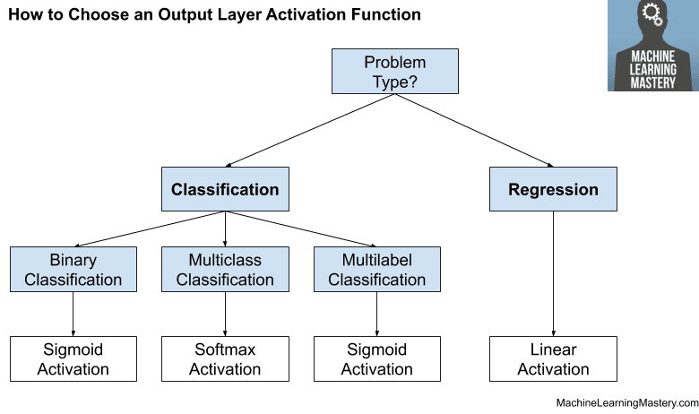
حالا من میخوام واقعا این مدل رو بسازم! برای این کار از سایت زیر میخوام استفاده کنم :
با استفاده از این سایت به سادگی و با یک رابط کاربری فوق العاده ساده میتونید یک مدل برای طبقهبندی (Classification) صوت و تصویر ایجاد کنید و خروجی رو همون لحظه با وبکم تست کنید. حتی کدش رو هم بهتون میده و میتونید مرحله train رو آنلاین انجام بدید و بعد از مدل آموزش دیده به صورت آفلاین استفاده کنید!
زمانی که در صفحه اصلی سایت بر روی Get Started کلیک کنید سه تا گزینه براتون میاره و باید نوع پروژه رو مشخص کنید. من Image Project رو انتخاب میکنم :
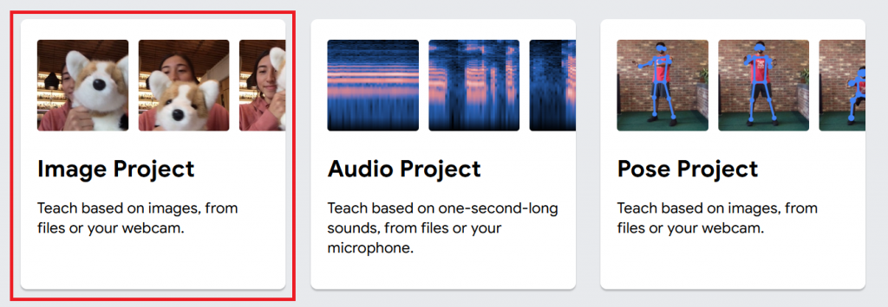
در مرحله بعدی هم Standard Image model رو انتخاب کنید :
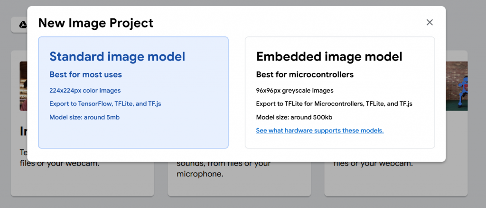
حالا باید با استفاده از دکمه Upload تصاویر مربوط به هر کلاس رو آپلود کنید. میتونید از گوگل درایوتون هم تصاویر رو انتخاب کنید. من از دیتاست زیر استفاده میکنم :
تعداد تصاویر زیاد بود، من اینجا فقط ۶۰ تا تصویر رو برای هر دسته آپلود کردم. هر چی تعداد تصاویر بیشتری آپلود کنید مدل دقیقتری خواهید داشت!
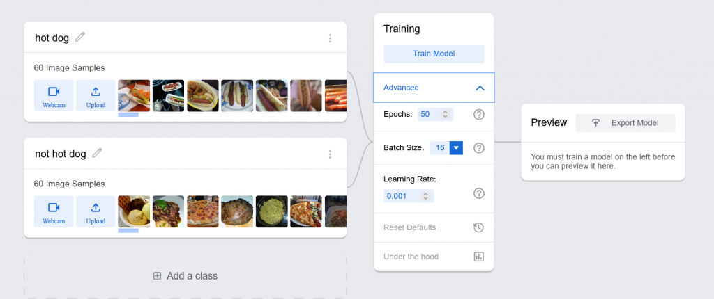
برای train یکسری گزینه ها وجود داره. با یه مثال براتون توضیح میدم. فرض کنید ۲۰۰ تا تصویر داریم و تعداد Batch Size رو ۵ و تعداد Epoch رو ۱۰۰۰ در نظر گرفتیم. این یعنی ما میخوایم دیتاست (تصاویر) رو به ۴۰ دسته ۵ تایی تقسیم کنیم و این کار رو هم ۱۰۰۰ بار انجام میدیم. یعنی کل تصاویر رو ۱۰۰۰ بار به عنوان ورودی به شبکه عصبی میدیم و وزن ها رو آپدیت میکنیم. به طور کلی هر چی تعداد epoch ها بیشتر باشه مدل دقیقتری خواهیم داشت (اما لزوما همیشه درست نیست). اگر میخواید در مورد نحوه انتخاب هایپرپارامتر ها بیشتر بدونید مقاله زیر رو بخونید :
بعد روی دکمه train کلیک کنید تا پردازش رو شروع کنه. بعد از اینکه عملیات به اتمام برسه شما میتونید با استفاده وبکم یا آپلود یک تصویر مدل خودتون رو تست کنید. من یه تصویر رو به عنوان نمونه آپلود کردم و نتیجه به صورت زیر شد :
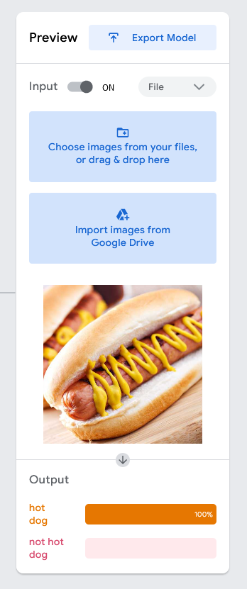
همونطور که میبینید این تصویر رو ۱۰۰ درصد یک هاتداگ تشخیص داده! زمانی که روی Export Model کلیک کنید صفحه زیر رو مشاهده خواهید کرد :
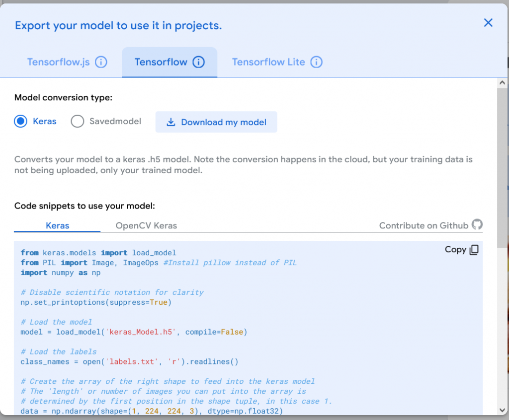
در اینجا گزینه های زیادی رو برای خروجی گرفتن از مدلتون میتونید مشاهده کنید. با استفاده از Tensorflow.js به شما کد ها و نحوه استفاده از مدل train شده در جاوا اسکریپت رو نشون میده. اگر Tensorflow رو انتخاب کنید کد های نسخه اصلی Tensorflow در پایتون رو نشون میده و اگر Tensorflow Lite رو انتخاب کنید نحوه استفاده از مدل رو در اندروید و Google Edge TPU نشون میده. پس از اینجا میتونید مدل train شده خودتون رو دانلود کنید و با استفاده از کد هایی که قرار داده توی پروژه خودتون ازش استفاده کنید.
من برای خودم جالب شد که یک مقدار در مورد Edge TPU ها تحقیق کنم. گوگل یکسری برد های ASIC رو برای اجرای الگوریتم های یادگیری ماشین توسعه داده که در تصویر یک نمونه Coral Edge TPU رو میتونید مشاهده کنید :
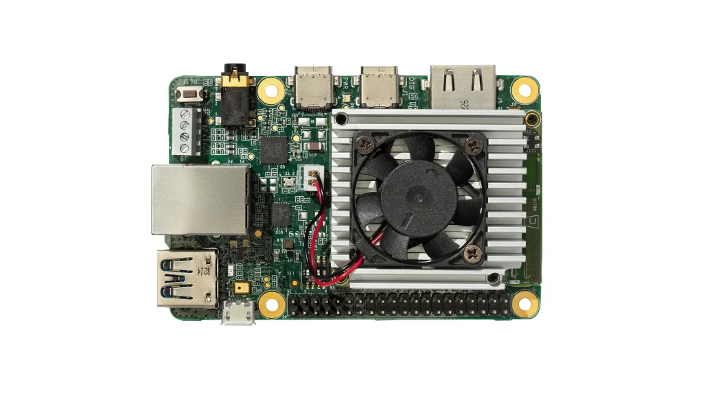
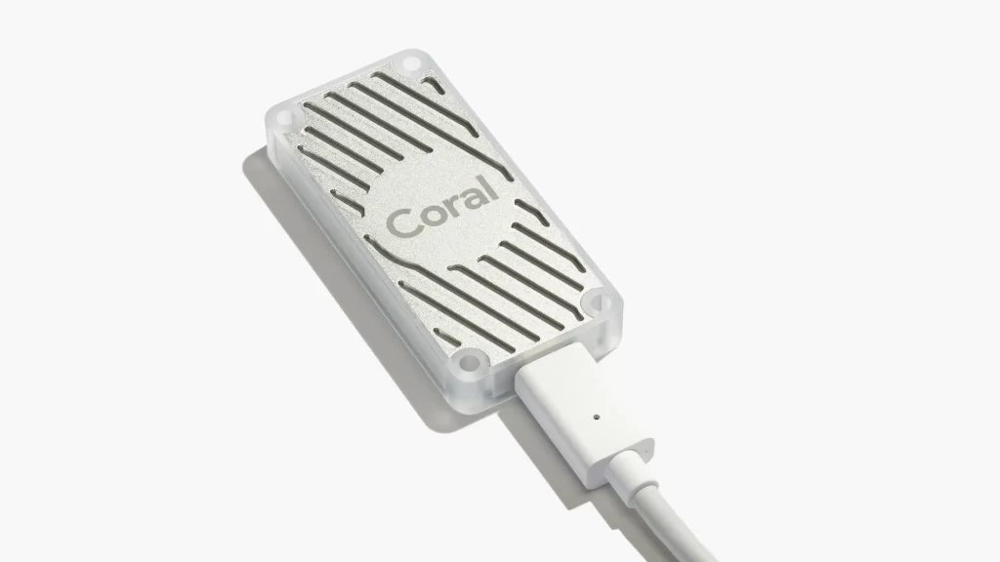
قیمتش هم حدودا ۶۰ دلاره. طبق توضیحاتی که توی سایتش نوشته ۴ تریلیون عمل در ثانیه رو میتونه انجام بده. تو لینک زیر یه بنچمارک ازش گذاشته :
nb.neighbours()
| title | date | |
|---|---|---|
| prev | تبلیغات تلویزیون زیر ذرهبین! | ۱۴۰۱/۰۷ |
| next | ۲. چالش دانیلا با تابع ReLU! | ۱۴۰۱/۱۰ |